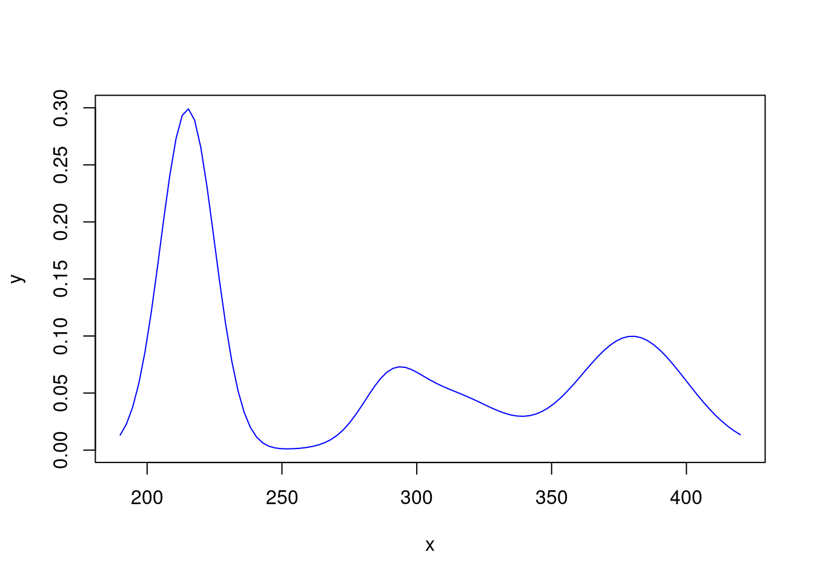
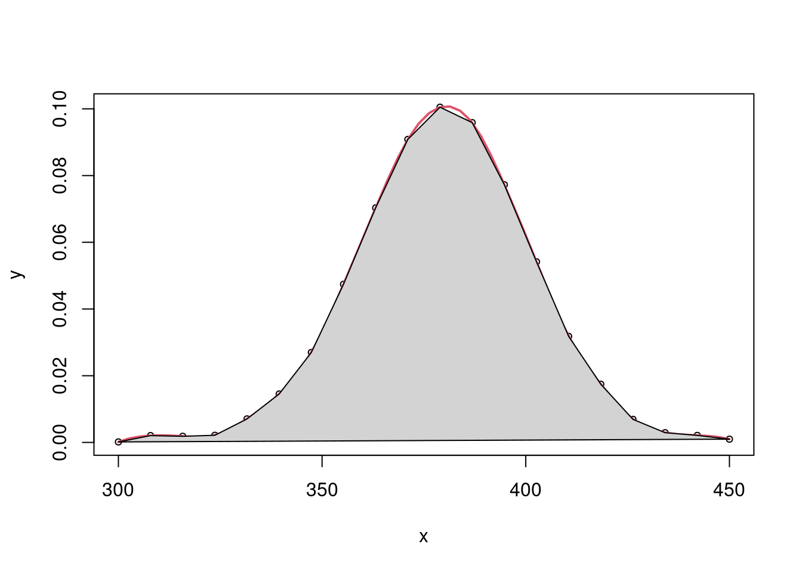
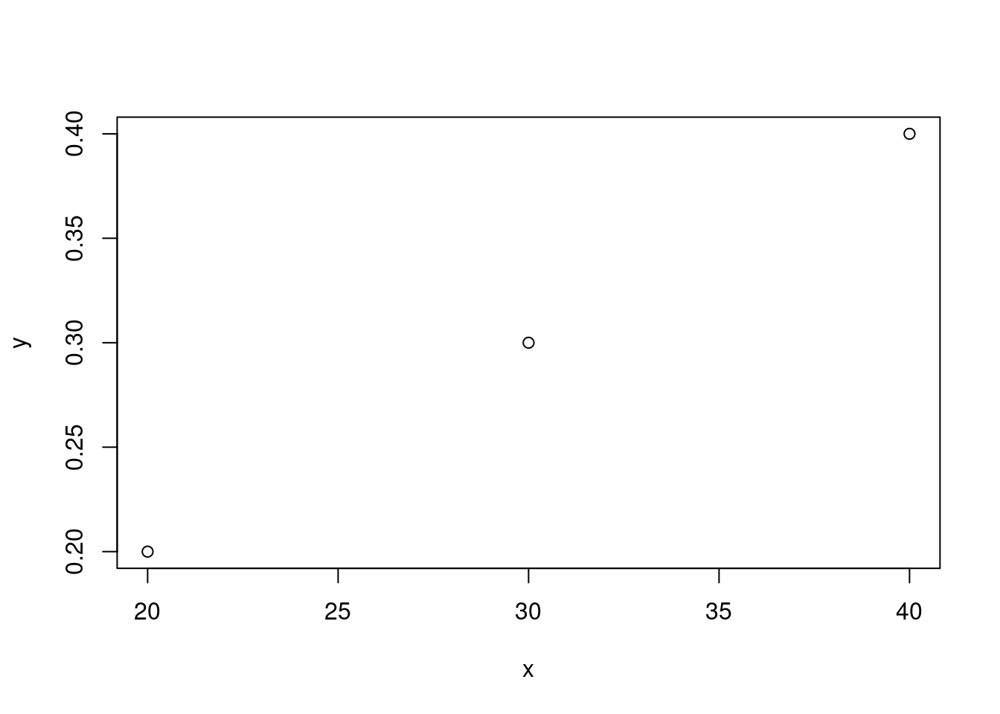

x <- 1:5
y <- c(2, 6, 7, 11, 15)
plot(x,y)
linxy <- lm(y~x)
abline(linxy, col=2, lty=2)
x <- 1:5
y <- c(2, 6, 7, 11, 15)
plot(x,y)
linxy <- lm(y~x)
abline(linxy, col=2, lty=2)
a=5
b=1 # parâmetros da curva hiperbólica
set.seed(1) # fixa a semente de geração aleatória
x <- c(1,3,10,20,50,100,200)
y <- a*x/(b+x)+rnorm(n=7,mean=0,sd=0.1)
par(mfrow=(c(1,2))) # prepara para apresentar 2 gráficos na tela
plot(x,y) # plota o gráfico hiperbólico
plot(1/x,1/y) # plota o gráfico linearizado
abline(1/a,b/a, lty=2, col=2) # adiciona a linha
layout(1) # retorna ao layout originalplot(x,y,
ylab = expression(Delta^13*C-CO[2]~"(\u2030)"),
xlab = expression(italic(A[380])~"("*mu*"mol"~CO[2]~m^-2~s^-1*")"))
Além do pacote base da instalação do R, o pacote plotmath também permite uma série de anotações atípicas.
set.seed(10)
y <- runif(5)
barras <- barplot(y, names=c("A", "B", "C", "D", "E"))
erro <- y/3
arrows(x0=barras,y0=y,x1=barras,y1=y+erro, length = 0.1, angle =90)
x = 1:15
y = rnorm(15)
plot(x,y)
lines(spline(x,y))
sample(c("Ala", "Glu", "Tyr", "Val", "Trp", "Cys", "Gly", "Ser", "Ile", "Leu", "Met", "Phe", "Gln", "Asn", "Asp"), size = 45, replace = TRUE, prob = c(0.2, 0.3, 0.2, 0.2, 0.1, 0.2, 0.3, 0.2, 0.2, 0.1, 0.2, 0.3, 0.2, 0.2, 0.1)) [1] "Met" "Val" "Leu" "Ser" "Ala" "Glu" "Glu" "Gly" "Met" "Glu" "Phe" "Gly"
[13] "Tyr" "Phe" "Val" "Asn" "Leu" "Glu" "Tyr" "Phe" "Ile" "Tyr" "Tyr" "Cys"
[25] "Ala" "Gly" "Phe" "Tyr" "Cys" "Gln" "Met" "Ile" "Tyr" "Gly" "Glu" "Gly"
[37] "Ala" "Ser" "Ala" "Gly" "Ala" "Cys" "Leu" "Glu" "Glu"A curva abaixo simula a resposta de absorção molecular de uma proteína.
gauss = function(x0,x,sig) 5*{1/(sqrt(2*pi)*sig)* exp(-(x-x0)^2/(2*sig^2))} # define a função gaussiana (fator 5 para absorção realista)
curve(gauss(380,x,20)+.5*gauss(310,x,20)+ .2*gauss(290,x,10)+1.5*gauss(215,x,10),col="blue",xlim=c(190,420),ylab="y")
set.seed(70)
x <- seq(from=300, to=450, length=20)
y <- gauss(380,x,20)+abs(runif(20,min=0,max=1/500))
plot(x,y, cex=0.7)
f = splinefun(x,y)
integrate(f,0,pi)-84.59541 with absolute error < 9.4e-13lines(spline(x,y), col=2, lwd=2)
polygon(x, y, col = "lightgrey") 
# Área sob curva (AUC) de dados
# 1. Pracma
dat <- read.table(header=TRUE, text='
N x y
1 20 0.2
2 30 0.3
3 40 0.4')
plot(y~x, data=dat)
require(pracma)Loading required package: pracmaAUC <- trapz(dat$x,dat$y); AUC[1] 6# 2. DescTools
require(DescTools)Loading required package: DescTools
Attaching package: 'DescTools'The following objects are masked from 'package:pracma':
Mode, Rank
AUC2 <- AUC(dat$x,dat$y, method="trapezoid"); AUC2[1] 6 Para ilustrar a vantagem de automatização de ações por loop (quando a vetorização não é possível), segue uma receita para uma análise estatística, plotagem com títulos e etiquetas, bem como salvamento de gráficos em jpeg com nomes específicos, toda a saída separada pelos níveis distintos de um dataset. Para tanto será utilizado o conjunto de dados iris.
all.iris <- unique(iris$Species) # extrai os níveis do dataset
for (i in 1:3){ # inicia o loop
Species.i <- all.iris[i] # define o título de cada plot e arquivo separado
iris.i <- iris[iris$Species == Species.i, ] # define o subconjunto para cada gráfico, separado por nível
plot.arq <- paste(Species.i, ".jpg", sep = "") # monta o arquivo separado dos plots
jpeg(file = plot.arq)
plot(x = iris.i$Petal.Length, y = iris.i$Petal.Width,
xlab = "Comprimentao de pétalas",
ylab = "Largura de pétalas", main = Species.i) # elabora o gráfico
# Média e desvio-padrão de comprimento de pétalas, por subgrupo
print(paste("Média de comprimento de pétalas do subgrupo", Species.i, " (x+/-sd):", mean(iris.i$Petal.Length),"+/-", sd(iris.i$Petal.Length)))
} # fecha o loop[1] "Média de comprimento de pétalas do subgrupo setosa (x+/-sd): 1.462 +/- 0.173663996480184"[1] "Média de comprimento de pétalas do subgrupo versicolor (x+/-sd): 4.26 +/- 0.469910977239958"[1] "Média de comprimento de pétalas do subgrupo virginica (x+/-sd): 5.552 +/- 0.551894695663983"$$$$$$$$$$$$$$$$$$$$$$$$$$$$$$$$$$$$